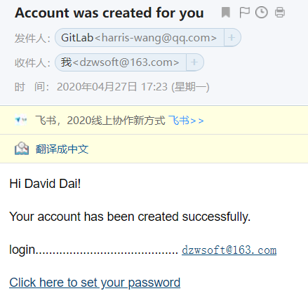

用户
添加用户
用户可以自己注册

管理员可以主动添加用户，用户会收到邮件通知，并重置密码
用户收到邮件：

点击链接，重置密码，即可登录。
用户上传自己的SSH Key
记事本打开C:\Users\Harris Wang\.ssh\id_rsa.pub文件，内容如下：
ssh-rsa AAAAB3NzaC1yc2EAAAADAQABAAABAQDFzwHVHv/8225rhNwSE2iAHUjAQD6YOChBbkOOVRhH3/d/M9YKr5mcvLTwIQ5koaK1s7w8mPeHYSf2ql/goloZxCQj/uOfSK25h2i8oSU1lzGSSzno8yDKsy20WgdOKHdRsfvwY8RjkQ5bt9ZBRRl1PwGz+nU+JOF0WpHtk20lzXZmA8pXlcwK6a+2tRo79Atacfmp4UN/9w9k5rVUKhmOQVYofcY4fK0tAcVDvX4p6inWGlLPkmQmQh3U7zHZy0n4CFbs3ejrTXZFmpzmgGWaxX+hPlbR07chNWfzz2IMtruTxKlzNSf5iGOcnXesL8PV8PPu+6DH9239iseOmT1Z harris-wang@qq.com
复制内容，粘贴到gitlab中：
如果没有.ssh文件夹，或者.ssh文件夹里没有内容，请参考git安装。